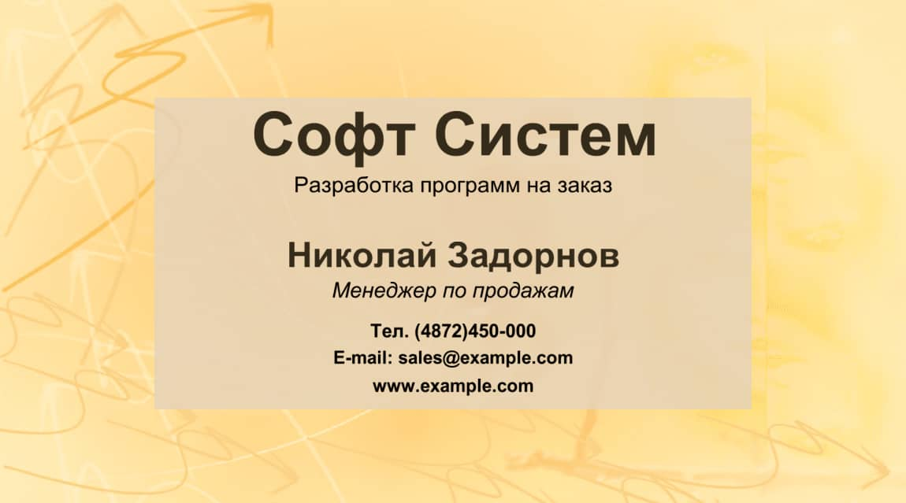
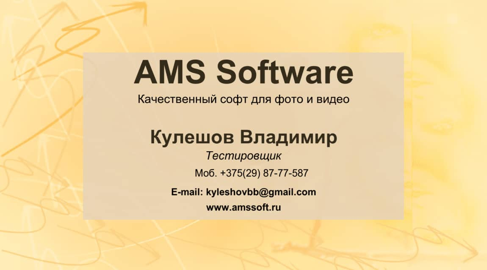
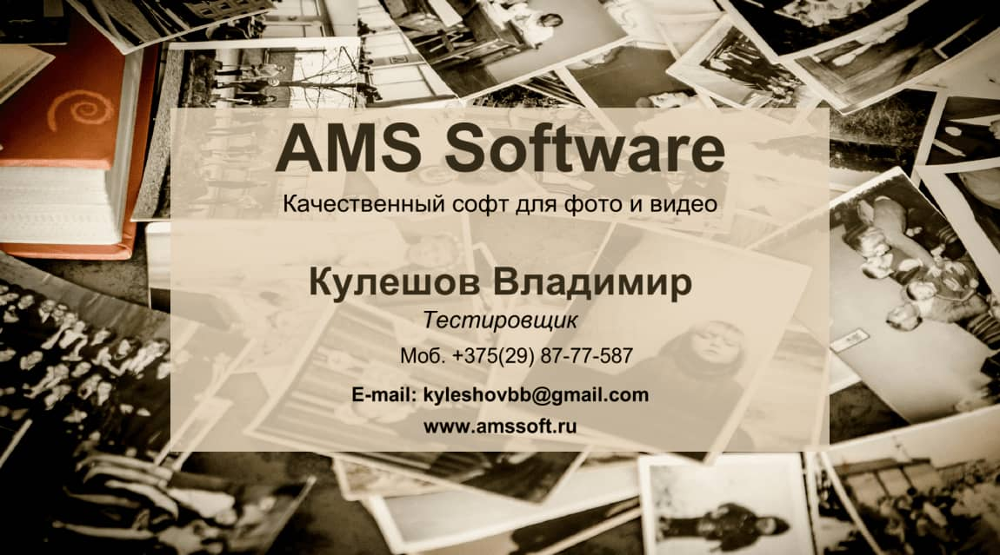

Как сделать визитку: Инструкция и образец
Создание визиток – процесс вовсе не трудоемкий, а, наоборот, увлекательный и
интересный. Программа для печати визиток располагает широкими возможностями для креативного оформления
будущих карточек. Так, в ней содержится более 100 готовых шаблонов, которые помогут создать визитку
определенной тематики. Если вы работаете в турагентстве, то вам подойдет категория «путешествия», а
если вы – персональный тренер, то загляните в раздел «спорт». Конечно, это далеко не все доступные
варианты, в каталоге их гораздо больше. На базе вышеупомянутых шаблонов вы можете собрать визитку «по частям».
Для этого потребуется выбрать композицию, фон, цвет, фото, картинки или использовать уже имеющиеся у вас в
запасе логотипы. Кроме этого, программа позволяет добавить рекламный слоган.
Для того, чтобы создать эффективную визитку, мы должны исходить, прежде всего, из функций, которые она
будет выполнять. Во-первых, это предоставление информации о ее владельце. При этом нельзя забывать, что
визитная карта представляет не вас лично, а вас как сотрудника той или иной компании. Во-вторых, это
контактная информация, то есть возможность связаться с вами. В третьих, визитка должна подчеркивать имидж
вашей организации.
Визитная карточка - это традиционный носитель контактной информации о человеке или организации. Визитками
обмениваются во время официального представления, т.к. они являются удобным напоминанием и способом
запоминания сведений об ее владельце. Для того, чтобы сделать визитку, вовсе необязательно прибегать к
услугам полиграфических салонов. Сделать качественную визитку вы можете самостоятельно, используя программу
"Мастер Визиток". Алгоритм работы в редакторе довольно прост и включает выполнение нескольких
последовательных шагов.
Шаг 1
Выбираем шаблон

Чтобы узнать, как оформить визитку правильно, вам необходимо указать настройки будущей визитки.
В главном меню программы откройте раздел «Файл» > «Новая визитка». Окно, которое вы увидите, будет
содержать шаблон с полями, требующими заполнения. Здесь вам необходимо вписать такие параметры как тип,
формат и размер визиток. В поле «Данные» введите контактную информацию - ФИО, название организации,
должность и прочие данные. После того, как все поля буду заполнены, нажмите кнопку «Далее».
Шаг 2
Вносим контактные данные

С помощью данной утилиты вы не только узнаете о том, как оформить визитку, но и поймете, как можно
ее редактировать. Чтобы посмотреть все доступные варианты редактирования, посмотрите на правую
рабочую панель. В ней представлены функции выбора фона, выравнивания объектов визитки, добавление
различных надписей и логотипов, загрузка фотографий из актуального каталога или с персонального
компьютера. Далее проект с визитками необходимо сохранить. Для этого нажмите «Файл» > «Сохранить
проект».
Шаг 3
Настраиваем фон визитки

Если вы хотите выполнить оригинальный дизайн визиток, перейдите во вкладку «Дизайн».
В этом разделе вы сможете выбрать интересное оформление для визитных карточек. Вашему вниманию
предлагается множество шаблонов, разделенных на тематические категории. Это такие категории как
туризм, спорт, красоту и т.д. Вы также можете разработать свой собственный дизайн, если предлагаемые
шаблоны вам не нравятся. Как только вы завершите оформление визиток, кликните «Далее».
Распечатайте визитки
Пришло время вывести готовые визитки на печать. Сначала определитесь, сколько именно визитных карточек
вам нужно распечатать. После этого вам следует открыть раздел «Печать» и настроить те или иные
конфигурации. Подберите формат бумаги, необходимое разрешение и количество визитных карточек на
листе. Чтобы аккуратно отделить визитки друг от друга, можно установить специальные маркеры обрезки.
По окончании всех этих манипуляций, кликните «Печать» и распечатайте визитки на своем принтере. Если у
вас нет принтера, то сохраните макет в формате JPEG и отнесите на печать в типографию.
Заключение
Подводя итог, следует отметить ориентацию программы на конечного пользователя.
Интуитивно понятный интерфейс, позволяющий эффективно работать уже с первой минуты, вкупе с обширными
возможностями обеспечивает эффективную и качественную работу как для домашних пользователей, так и для
работников полиграфических салонов. Наконец, программа доступна в нескольких версиях - для персонального и
коммерческого использования, ее очень легко приобрести. Профессиональная техническая поддержка ответит на
любые вопросы в кратчайшие сроки. Попробуйте бесплатную демонстрационную версию и вы по достоинству оцените
преимущества данного редактора.